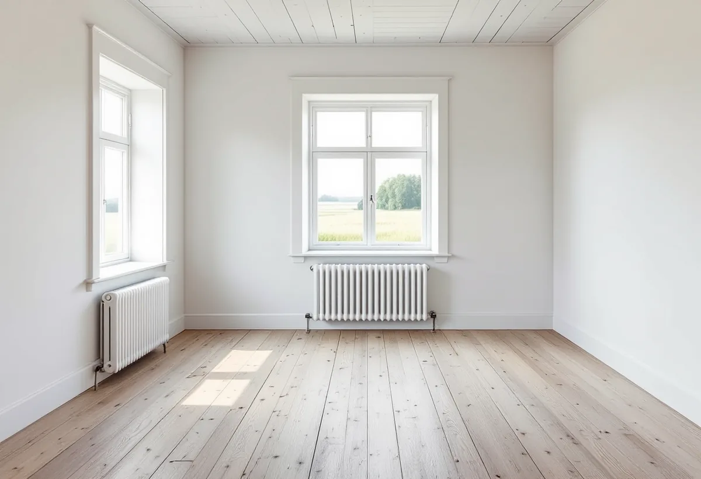

Platsbesök
Vi ser på hålen och gångarna och känner efter svikt i golvet.
Små hål och gångar i ett gammalt golv syns ofta först när färgen eller mattan är borta och slipningen har börjat. De flesta är spår av något som hände för länge sedan, men ibland säger de något om fukten under golvet. Geal Entreprenad AB slipar och lagar trägolv i villor, gårdar och fritidshus i Vallentuna, och vi tittar på orsaken innan vi bestämmer behandling.
Vallentunas översiktsplan beskriver en landsbygd där cirka 5 500 personer bodde 2017, med klungor av bebyggelse eller enstaka gårdar intill skogspartier och träddungar och med odlingslandskap runt byarna. Största delen av dagens byar ligger enligt planen på samma plats som under yngre järnålder, och i riksintresseområdet vid Skålhamravägen finns flera relativt stora byar med välbevarad bebyggelse.
Planen konstaterar också att allt fler bosätter sig i sitt fritidshus eller använder det en större del av året, så att gränsen mellan permanentboende och fritidsboende blir allt mer flytande. Sedan 1990-talet har flertalet fritidshusområden i kommunen omvandlats, och i Garns-Ekskogen finns cirka 500 bebyggda fastigheter.
Ett hus som har stått ouppvärmt delar av året, eller haft en matta på trägolvet i flera decennier, kan ha spår i golvplanken som blir synliga först när golvet slipas.

I en artikel i Svenska Byggnadsvårdsföreningens tidning beskriver en byggmästare med lång erfarenhet av gamla hus hur man läser spåren. Runda maskhål som inte är grövre än någon millimeter är ofarliga och uppkommer i gamla hus med oregelbunden uppvärmning eller som tidvis står helt ouppvärmda. Ovala hål på cirka 3–6 millimeter med lite rufsiga kanter kan däremot vara spår efter husbock, som är aktiv under sommaren.
Föreningen skriver i ett annat svar att angrepp av strimmig trägnagare inte är ovanliga i ouppvärmda hus. För att se om ett angrepp pågår kan man fotografera golvet med någon månads mellanrum och jämföra, eller dammsuga bort borrmjölet och senare dammsuga igen på låg hastighet med en vit, finmaskig trasa över munstycket. Då syns det om nytt borrmjöl har tillkommit. Är angreppet större och pågående är klimatet under golvet gynnsamt för gnagaren, och då kan större åtgärder bli nödvändiga.
Gångar som blir synliga när en gammal färg slipas bort kan enligt ett svar i föreningens frågespalt ha uppstått när huset stod ouppvärmt med en linoleummatta ovanpå. Stör de har man inget annat val än att byta hela eller delar av brädorna, eller spackla och måla eller betsa golvet.
Byggmästaren i föreningens artikel har sett många renoveringar som rubbat husets klimat, och oftast har det handlat om golv. När ett gammalt hus som är grundlagt direkt mot marken får golvet lackat eller täckt med linoleum- eller plastmatta kan fukten inte längre ventileras genom hela golvet, utan letar sig upp vid kanterna. En spricka mellan golv och sockel som är bredare än en centimeter kan tyda på angrepp i golvbjälkarna, och på bottenvåningen kan man gå på tå och sätta ned hälen hårt för att känna var golvet sviktar.
Om ett golv med djupa skador efter kyla, fukt och insekter skriver föreningen att orsaken till angreppen först måste vara åtgärdad. Är den inte det kan det vara olämpligt att måla golvet, eftersom ett tätare ytskikt hindrar fukten från att vädra ut. Ett skurgolv är det tekniskt bästa i det avseendet.
Mögel kan se ut som ett vitt pulver på plankorna. Föreningen förklarar att mögel är en ytlig påväxt men också ett förstadium till röta, och att orsaken är för hög luftfuktighet. I ett ouppvärmt utrymme bör den relativa luftfuktigheten ligga under 70 procent. Påväxten kan tas bort med en dammsugare med rund borste och hepafilter, och den som sanerar bör använda friskluftsmask med P3-filter.
Mindre skador kan få vara kvar som ett spår av historien, skriver föreningen. Det är svårt att få spackel att hålla över tid eftersom träet rör sig, men linoljespackel eller linoljekitt fungerar hyfsat vid mindre lagningar och är lätt att förnya. Vax går inte att använda om golvet ska målas. Finns det risk för stickor kan man skära ned lite med ett skåljärn.
Större skadade partier kan lusas i med nytt virke av samma träslag och med samma årsringstäthet, så att den nya biten rör sig som resten av brädan. Föreningen skriver att hantverksmässigt utförda lagningar visar att golvet är värdefullt. Ska golvet i stället läggas om, till exempel på en ny grund eller med golvvärme, finns det mer under golvläggare i Vallentuna.
Vi ser på hålen och gångarna och känner efter svikt i golvet.
Misstänker vi ett pågående angrepp jämför du borrmjöl eller foton under några månader.
Lagning, slipning och ytbehandling redovisas var för sig.
Skadade partier lusas i eller lagas med linoljespackel.
Golvet slipas så lätt som möjligt.
Vi föreslår en behandling som låter golvet torka ut, till exempel såpa.
Skatteverket räknar slipning av golv som rotarbete, och även reparation på grund av skadedjur ger avdrag. Att bekämpa skadedjur gör det däremot inte, och inte heller att mäta fukt. Avdraget gäller i småhus och fritidshus som du äger och använder som bostad.
Får du försäkringsersättning för arbetet ges inget rotavdrag. Enligt Byggnadsvårdsföreningen brukar en vanlig hemförsäkring innehålla en skadedjursförsäkring, så kontakta försäkringsbolaget om angreppet är stort. Avdraget är högst 30 procent av arbetskostnaden, högst 50 000 kr per person och år och högst 75 000 kr tillsammans med rut. Geal drar avdraget direkt på fakturan.
Hur stora skadorna är, om brädor ska lusas i eller bytas, golvytan och vilken ytbehandling du väljer. Efter ett gratis platsbesök får du ett skriftligt kostnadsförslag.
Parkett, trägolv, klinker och slipning.
Golvläggning i Stockholm →Takbyte, takbesiktning och plåtarbeten.
Takläggare i Vallentuna →Villaområden och gårdar.
Takrenovering i Vallentuna →Nytt våtrum, Roslagsvatten och egen brunn.
Badrumsrenovering i Vallentuna →Ritningar, grannar och kommunens mark.
Byggföretag i Vallentuna →Fritidshus, stationssamhällen och villor i Vallentuna.
Fasadrenovering i Vallentuna →Flygbuller, glasval och lov i Vallentuna.
Fönsterbyte i Vallentuna →Golv på platta och golvvärme i villan.
Golvläggare i Vallentuna →Utbyggda kök, villor och gårdar.
Köksrenovering i Vallentuna →Gårdar, fritidshus och villor i Vallentuna.
Målare i Vallentuna →Rännor, plåttak och uthus i Vallentuna.
Plåtslagare i Vallentuna →Uthus, uterum och fritidshus.
Snickare i Vallentuna →